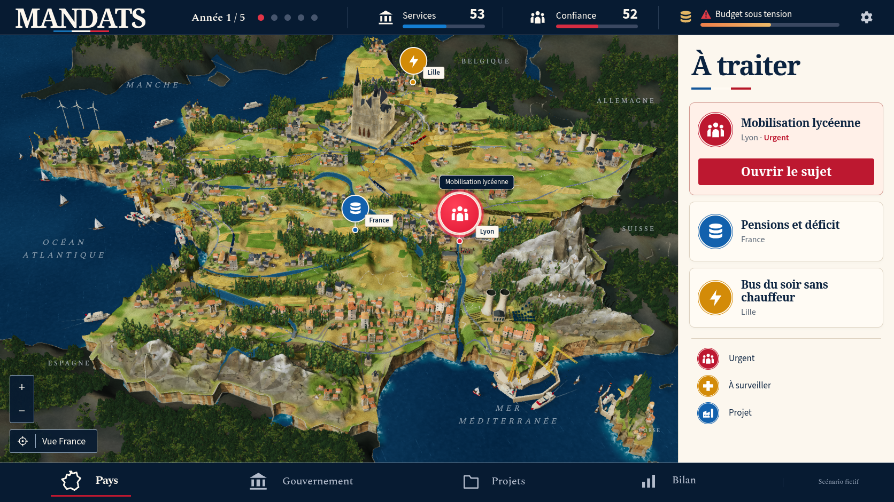
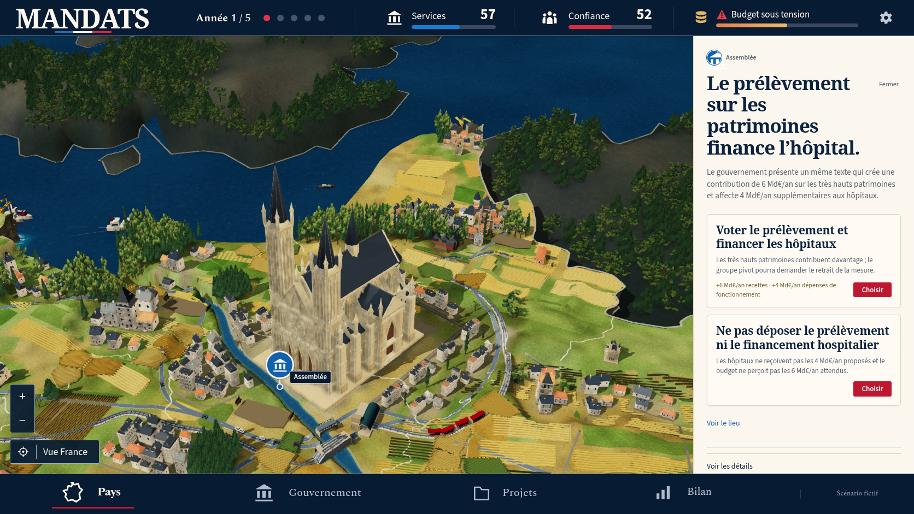
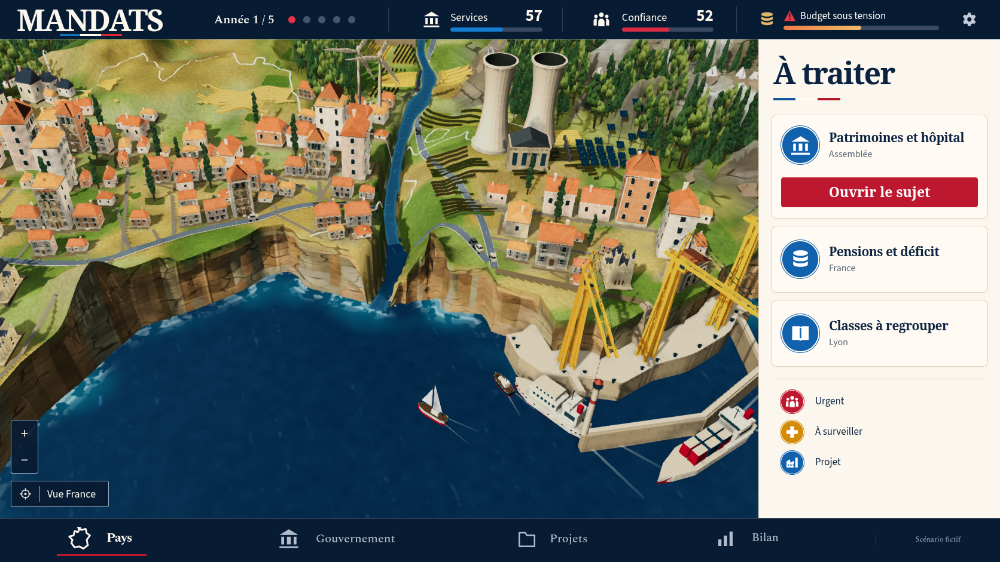
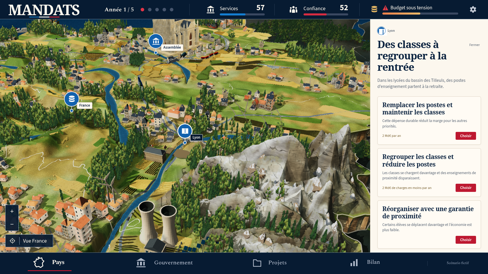
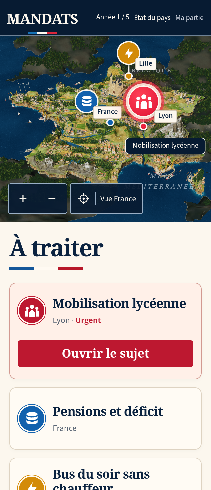
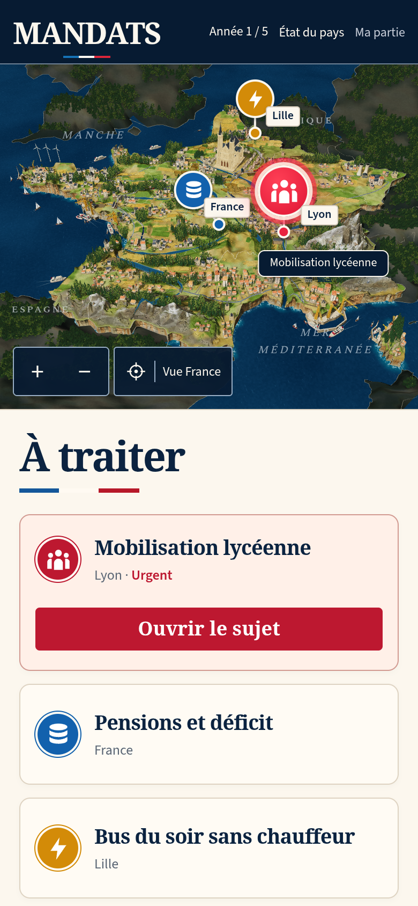

MANDATS — comparaison 43
La miniature reste en dessous de la référence. La reconstruction et les contrôles complets continuent. La PR reste en brouillon.
La capture de jeu montre une véritable décision scolaire : année 1, services 53, confiance 52 et mobilisation lycéenne. Le scénario fictif de la référence n’a pas été injecté dans la partie.


Référence canonique.Production 43, obtenue avec les contrôles du jeu.
| Partie | Modification réelle | Écart encore visible |
|---|
| Relief | Trois crêtes alpines inégales, neiges plus visibles, panneaux secs fracturés sous les bourgs en conservant leur contact supérieur. | Grandes faces plates et falaises encore régulières. |
| Rivages | Embouchures calculées sur la côte rendue, fonds et tabliers protégés autour des ouvrages. Sept ports et 34 bateaux. | Raccord méditerranéen trop raide ; finesse rocheuse insuffisante. |
| Bourgs et bois | Sept petits bouquets feuillus, détail végétal réellement choisi selon la taille à l’écran. 778 maisons acceptées, proportions ordinaires moins étirées, joints de pierre sur la cathédrale. | Façades simples, végétation encore compacte et décor moins naturel que la référence. |

Assemblée puis « Voir le lieu ». Les façades de la cathédrale et des maisons demandent encore du travail.
Déplacement natif et zoom vers le rivage sud. Le contact entre le fleuve, la falaise et la mer reste à corriger.
Inspection de Lyon puis un clic sur « Réduire la carte ». La géométrie rocheuse et l’enneigement restent moins fins que la référence.

320 × 740, DPR 2, framebuffer 640 × 562 ; véritable choix scolaire.
390 × 844, DPR 2, framebuffer 780 × 642. Aucun débordement horizontal.Preuves et limites
Dix captures natives de production contrôlent zéro erreur de page, de console, de requête et HTTP. Leurs réponses JS/CSS correspondent au build conservé. Les contrôles du jeu seuls déplacent la caméra et déclenchent une vraie mobilisation ; aucun état, modèle ou choix de détail n’est forcé. Les reproductions du terrain et du GLB végétal sont identiques octet par octet.
Le check complet passe 1 082 tests, trois cibles TypeScript, le build, le pré-rendu et le précache de 150 ressources. La suite rework originale complète passe 23 tests actifs, avec les neuf omissions de sa configuration, en 18 minutes. La suite social complète passe 13 tests actifs, avec ses trois omissions configurées, en 11,4 minutes. Les suites finales et la conformité artistique restent à atteindre ; aucun test, délai, retry ou worker n’a été modifié.
La CI précédente 6550163 conserve un échec rework de reprise DPR WebKit après les 15s d’origine et un échec site au chargement d’une page d’importation/reprise v9 après les 60s d’origine. Ces résultats précèdent les changements 43. Les captures SwiftShader ne certifient pas la fluidité d’un appareil physique.
Manifeste · Captures natives · Build · Suite rework originale · Suite social originale